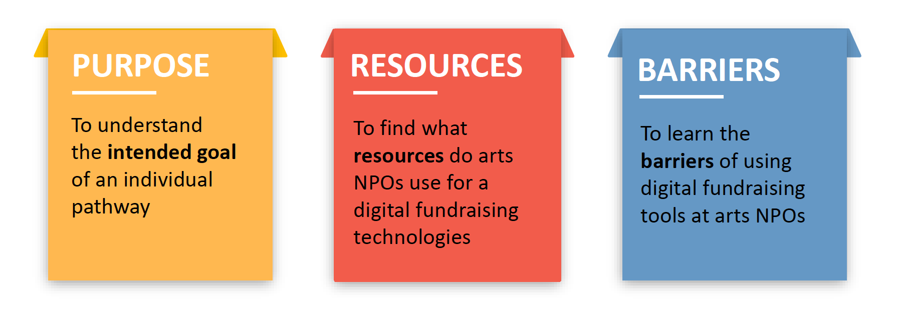

Scope
5 Persons Team
Role
Lead Data Analyst
Skills
Survey Design
Interview
Data Clean
Data Analysis
Data Visualization
Data Interpretation
Programming R
Tabuleau
Client
AMT Lab
1.1 Project Overview
About AMT Lab
AMT Lab is a research center of Carnegie Mellon University’s Master of Arts Management program. The mission of AMT Lab is to serve as an exchange, a catalyst for innovative ideas, and a conduit for knowledge circulating at the intersection of arts, management, and technology.
Research Question
"In the USA, how do arts nonprofit organizations compare to other nonprofits in digital fundraising practice, purpose, results, and resources using SMS, Facebook, Peer to Peer, and Mobile Bidding?"
1.2 Methodology
Besides review of literature, we have methodologies as follows:

2.1 Survey
To understand the trends of emerging digital fundraising technologies in nonprofit arts sectors in the United States, the team conducted a national survey. The survey was designed to understand how nonprofit arts organizations in the United States use emerging digital fundraising tools: SMS, Facebook NP, Peer-to-Peer, and Mobile Bidding in their fundraising plans. The objectives of the survey were:
Survey Logic Structure:
Key Findings from Survey

2.2 Case Study
2.2.1 NPO Case Study
We examined how emerging digital fundraising technologies are being used by researching successful fundraising campaign examples in the non-arts nonprofit sector. The objectives of the non-art nonprofit case studies are
- To learn more about how the digital fundraising pathways shape the overall nonprofit fundraising world.
- To understand the differences and similarities between the arts and non-arts organization regarding using emerging digital fundraising pathways.
Key Findings
- Short Message System: most organizations use it as one time use or for emergency funding; there is a promising for engagment. In general, 7% of NGOs use it regularly.
- Peer-to-Peer: 35% of NGOs use P2P regularly. They used it for various purposes but most for special and annual events.
- Mobile Bidding: MB can simplify auction process on staffing and payment.
- Facebook Nonprofit: NGOs tended to utilize more of Facebook NP’s features including donation buttons, customized landing pages, and online fundraising page.
2.2.2 Vendor Case Study
The team researched four digital fundraising vendors from different pathways. These case studies helped the team understand what vendors features and functions offer for nonprofit organizations and what opportunities are available for arts organizations to take advantage of in the future. The objectives were:
- To learn which emerging digital fundraising vendors are most commonly utilized by arts organizations.
- To understand why selected emerging digital fundraising vendors are most utilized by arts nonprofit organizations.
- To learn the implications of how arts organizations can use emerging digital fundraising vendors.
Key Findings
- Fund dispersion with 24-48 hours of donation.
- Data available through direct CRM integration or downloadable as a spreadsheet (.CSV)
- Onsite or online tech support
- Mix and match of nanual subscription fee, % of donations, or credit card service fee.
2.3 CRM User Interviews
To understand better digital fundraising technology integration, the team conducted review of literature and interviewed three database administrators that use dominant CRM systems in the nonprofit sector: Blackbaud, Salesforce, and Tessitura. The objective is:
- To understand how CRM systems are used with integrating with digital fundraising technologies.
Key Findings
- Salesforce has the highest compatibility with many emerging digital fundraising tools.
- Although Blackbaud and Tessitura have flexibility in design and control over the products. However, they have not solved some external data integration obstacles.
- Salesforce has built several partnerships with third-party vendors with digital fundraising platforms. There is also a free Salesforce AppExchange application, OneCause Connect, to boost data exchange with Salesforce and improve data security.
- In order to prevent data duplication and security problems, Salesforce developed four distinct layers: Identity, Data, Process, and Presentation layers.
3.1 Conclusions
"Overall, both arts and non-arts NPOs have similar goals for utilizing digital fundraising, but non-arts NPOs are doing more effort in testing and implementing these tools."
3.2 Recommendation
Final Thoughts:
- If arts organizations follow the above recommendations, the sector would be better prepared and more informed about current digital practices that will help them improve their fundraising efforts as well as donor engagement. Having knowledge about these strategies can help arts fundraisers start utilizing digital fundraising tools with more confidence, which can lead to more interest in prototyping newer technologies like bitcoin. There are many emerging technologies available, and by following these recommendations, arts organizations can expect to run more efficiently as well as staying relevant to today’s digital world.